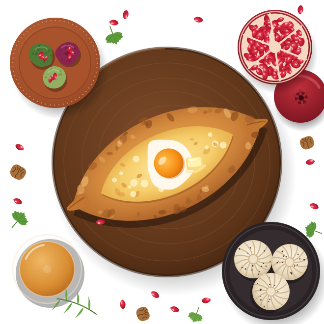

Georgian restaurant in Clapton, E5
Bread from the clay oven. Wine from the clay jar.
Cheese breads baked to order in our tone oven, khinkali folded by hand every afternoon, meat and mushrooms grilled over vine cuttings, and amber wines made in qvevri, clay jars buried in the ground.
Open Tuesday to Sunday. See our hours

- Tuesday to Sunday Lunch from Wednesday, dinner every night we open
- Supra feasts For two or more, from £40 a head
- The Marani Private cellar room for 12 to 24
- Walk-ins welcome Six seats at the counter by the oven
Where to start
Six dishes we would order for you
Most of our menu is made for sharing. Two people usually order three or four plates, then a khachapuri to finish them off.
The full menu, with allergensAdjaruli khachapuri, kalakuri khinkali, pkhali, badrijani, pork mtsvadi and pelamushi. See the menu.
The supra
Let us feed the whole table
A supra is a Georgian feast. The table fills up, empties and fills up again, and someone stands to make a toast between the rounds. Ours runs to five rounds, from pkhali to pelamushi, and the whole table shares it.
The supra, £45 a head, and the garden supra (vegan), £40 a head. See what is in them.
The kitchen
Sunday lunch in Kutaisi, every day in Clapton
Nino and Levan grew up in Kutaisi, in western Georgia, where Sunday lunch carries on until it is time for dinner. Nino cooks. Levan runs the dining room and the wine, and will happily talk you through both.
Our bread bakes on the inside walls of a tone, a round clay oven set into the kitchen floor. Meat and mushrooms cook over vine cuttings. Khinkali are folded by hand every afternoon, and the wine comes from small family makers in Kakheti and Imereti who still ferment it in qvevri.
- 19+
- pleats in every khinkali
- 400°C
- inside the tone oven
- 5
- qvevri wines by the glass
Why Jonjoli? Jonjoli is a pickle made from the flower buds of the bladdernut tree. Every Georgian kitchen has a jar. Ours is on every table.
- Photo to comeThe tone oven at full heat
- Photo to comeFolding khinkali, 3pm
- Photo to comeThe dining room at night
- Photo to comeAmber wine, poured
Gift vouchers
Give someone a supra
Our vouchers work for food and drink on any day we are open, and last for 12 months. We email a PDF the same day, or post a printed card.
- Any amount, or a whole supra for two with a bottle of wine
- Pay by a secure card link we send you
- Spend it in one go or over several visits
Good to know
Before you come
Anything else? Message us and we will reply, usually within the hour while we are open.
Is there a service charge?
We add an optional service charge of 12.5% to every bill. All of it goes to the team and is shared between the kitchen and the dining room, as the law requires. If you would rather not pay it, tell us and we will take it off.
Do you take a deposit for bigger tables?
For tables of 6 to 8 we ask for a deposit of £10 a head when we confirm the booking, through a secure card link. It comes off your bill on the night.
Cancel or cut your numbers at least 48 hours before and we refund it in full. Later than that, or if nobody comes, we keep it. Groups of 9 or more book through private dining, which has its own terms.
Can I just walk in?
Yes. We keep the six seats at the counter by the tone oven for walk-ins, and you can watch the bread go in. Friday and Saturday evenings are busy, so book if you can.
What if we are running late?
We hold tables for 15 minutes. Send us a WhatsApp and we will do our best to keep yours for longer.
I have a food allergy. Can I eat here?
Usually, yes. Every dish on our menu lists which of the 14 major allergens it contains. Please tell us when you book and again when you order. Walnuts, wheat and milk are used all over our kitchen, so we cannot promise any dish is free from traces of them.
Are children welcome?
Very. We have high chairs and room for a pram, and the kitchen makes a small khachapuri for small people. Tell us when you book.
Can I bring my own wine or cake?
Wine, no: we would rather pour you something from our list. Cake, yes: bring it in and we will plate it and bring it out with candles, at no charge.
Opening hours
Come and eat
Open Tuesday to Sunday.
- Monday
- Closed
- Tuesday
- 5:30pm to 10:30pm
- Wednesday
- 12pm to 3pm5:30pm to 10:30pm
- Thursday
- 12pm to 3pm5:30pm to 10:30pm
- Friday
- 12pm to 3pm5:30pm to 11pm
- Saturday
- 12pm to 3:30pm5:30pm to 11pm
- Sunday
- 12pm to 9pm
The kitchen takes last orders 45 minutes before we close. We close on Christmas Day, Boxing Day and New Year's Day.
Finding us
4 Tarragon Yard, Clapton, London E5
Tarragon Yard is a short cobbled yard off Chatsworth Road. Look for the green door and the smell of baking bread.
- Train Homerton or Clapton (London Overground), each about ten minutes' walk.
- Bus Routes along Lower Clapton Road stop about eight minutes' walk away.
- Bike Two cycle stands right outside the door.
- Car Street parking nearby is mostly for permit holders. Check the signs before you leave the car.
Accessibility
- Step-free entrance from the yard, through a door 90 cm wide. Tell us when you book and we will keep a table with space around it.
- An accessible toilet on the ground floor, with grab rails and an alarm cord.
- The Marani is down fourteen stairs with a handrail, and there is no lift. For a step-free group, ask for the long table.
- Large-print menus, and any of us will happily read the menu to you.
- Assistance dogs are very welcome. We will bring water.
- Quieter times are weekday lunches and Tuesday evenings. We keep the music low before 8pm.
Questions? Message us.
WhatsApp is quickest. We answer from 11am, Tuesday to Sunday. If you call during service and we miss you, we will ring back.